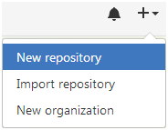

Github Tutorial
GitHub Tutorial
by Ricardo Pena
Git vs. GitHub
What is Git?
Git is used to administer your code by saving "snapshots" of it. Git helps the coder have basic access to the past revisions of their directory.
What is Github?
Github is a platform that saves your code online (in the cloud). In order to use this, you need to have Git. Github also provides easy collaboration on projects. In order to use Github you need to have Git.
Initial Setup
How do I make a Github account?
Creating a Github account is essential because it will help you push commits to your repository and therefore will enable you to access the revision history of your directory. Steps to making a Github account:
1. Go to github and click on 
2. Make a username, add an e-mail address, and create your password.
3. Follow the directions to "Choose your plan" and "Tailor your experience".

4. Now you have your github account. Don't forget to verify your e-mail!
You can now sign into c9 with your Github account. In c9 you can now create your directories and push any changes to github.
How to create a SSH key between Github and c9:
Now that you have access to Github and c9 we will need to make a SSH key. Here are some steps to help you complete this task:
1. On github click on your avatar and then click on settings.
2. Under your personal settings you will see  SSH and GPG keys; click on it.
SSH and GPG keys; click on it.
3. Make a and name it Cloud 9.
4. On cloud9 click on settings (gear symbol).
5. On the left, click on SSH keys and copy and paste the key that starts with ssh-rsa.
6. Add your SSH key and finally, open the directory that you have.
Repository Setup
How do I make a remote repository?
- Go to github and expand the "+" menu. Click on "New Repository".

- You should name the repository whatever the directory name is in c9. They should be the same!
- Finally, click on .
We now have made our remote repository on Github. Now you can push commits to this repository. Next we will initialize git and make our first add and commit. Skip steps 1-3 if you have a directory made, and are in it.
1. First you want to go into your ~/workspace. To do this, write cd ~/workspace in your terminal. (cd means change directory)
2. Next, we want to make a new directory (folder). Type mkdir repo-name. (repo-name should be the same as the directory, as explaned above)
3. We will now change the directory into the new repo.
4. To initialize git type git init inside of the terminal.
Add and commit:
Now that we have our directory ready, and have git initialized we will make our first add and commit:
1. Create a new file by typing: touch file-name.md
2. To add the file (after making changes to it) type git add file-name.md.
3. Next, we will make a commit: git commit -m "message*". *Your message should be in the present tense and should include a description about your changes. Ex: create new file and add content.
4. Finally we are able to push to our remote repository. In order to do this use git push.
By this point you should now have:
- Remote repository
- Git initialized
- First add & commit
Workflow & Commands
How and when do I use git- status, add, commit, and push?
When working on your project(s) you will need to know how to use these commands to fully use git and github.
- What do they do, and when should I use it?
-
git status: Keeps track of the file you are working on. It will either show you which files have been changed since the last commit, and which files have been added. You should be usinggit statusfirst, thengit add,git status, and finallygit commit. -
git add: This command will add a file to the staging area. This means that you are preparing it for a commit. This command does not mean that you have done a commit. This is the second step to making a commit. (You should usegit statusthird) -
git commit: Records the contents of a file at that are on the staging area: "snapshot". The message that is included in the commit should be in the present tense and should provide a short description about the edits/revisions you have done. This is the fourth step. -
git push: You are now ready to push your commits to your remote repository! Git push sends your commit to the remote repository, which in this case is in github. In github it is now saved to your commit history. This is the last step.
-